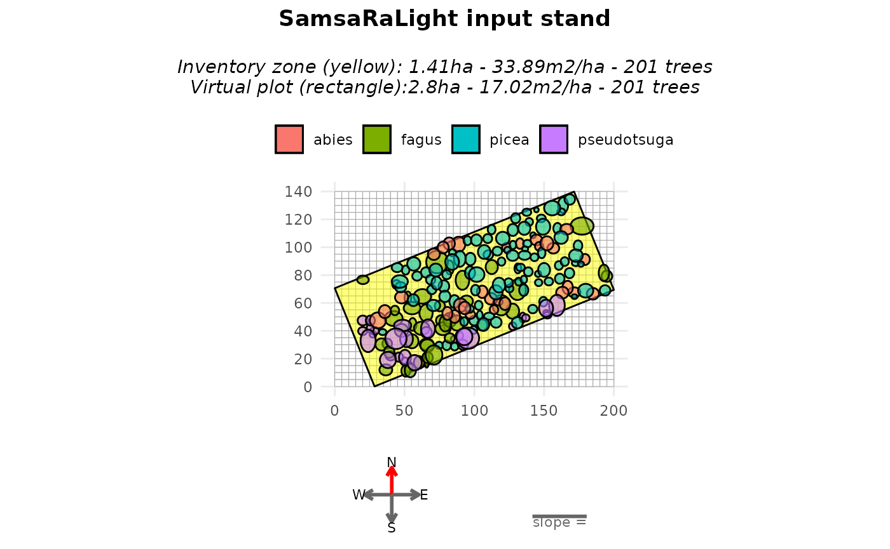
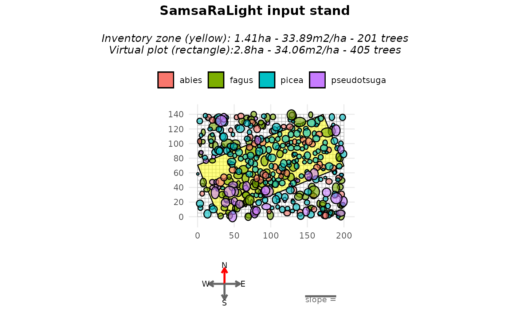
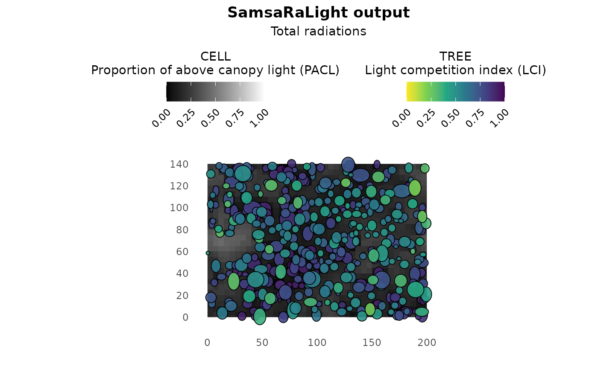

Asymmetric crowns in a non-axis-aligned stand
Source:vignettes/web_only/3b-complex_cases_bechefa.Rmd
3b-complex_cases_bechefa.Rmd
library(SamsaRaLight)
library(dplyr)
#>
#> Attaching package: 'dplyr'
#> The following objects are masked from 'package:stats':
#>
#> filter, lag
#> The following objects are masked from 'package:base':
#>
#> intersect, setdiff, setequal, unionIntroduction
In previous tutorials, tree crowns were represented using simple symmetric shapes (“E” and “P”). However, real tree crowns are often asymmetric, both horizontally (different crown radii in different directions) and vertically (maximum crown width not located at mid-crown for “E” nor crown base height for “P”).
In this vignette, we will use an inventory with asymmetric crown shapes. We will work with a non axis-aligned rectangle inventory zone to show that rotating a stand where crown are represented as assymetric shapes is tricky.
Crown shapes available in SamsaRaLight
SamsaRaLight supports the following crown types:
"E", "P", "2E", "4P", "8E". The number indicates how many
crown parts are used. The letter indicates the geometric shape
(Ellipsoid or Paraboloid). Choose the simplest crown type that matches
your data quality.
Symmetric crown shapes
Symetric shapes used in the Tutorial 1, defined by the mean crown
radius (mean of the four radius rn_m, rs_m,
re_m and rw_m) and the crown depth (computed
as h_m - hbase_m. These shapes are simple and efficient,
but cannot represent crown asymmetry, knowing that crown asymmetry
strongly affects light interception.
Asymmetric crown shapes
More complex shapes are created by splitting the crown into multiple geometric parts.
“2E” — Vertical asymmetry
Crown split into an upper and a lower ellipsoid
Allows vertical asymmetry
Requires
hmax_m, the height of maximum crown radius
Crown remains horizontally symmetric. Use this shape when crown expansion is not centered vertically.
“4P” — Horizontal asymmetry
Crown split into four horizontal paraboloids
Different radii allowed in the four cardinal directions:
rn_m(north),rs_m(south),re_m(east) andrw_m(west)Crown is vertically symmetric:
hmax_mis NOT required (paraboloid, thushmax = hbase_m)
Use this shape when crowns are laterally deformed by competition.
Context and data
We illustrate asymmetric crowns using the Bechefa
marteloscope, stored in the package as
SamsaRaLight::data_bechefa.
This marteloscope was installed in Belgian Ardennes by Gauthier Ligot in the scope of the IRRES project, which investigates the transition from even-aged to uneven-aged forest management. This is a mature mixed stand of Douglas fir and spruce in the Belgian Ardennes. The stand has been uneven-aged for more than 10 years.
All trees use the "8E" crown type, allowing both
horizontal and vertical asymmetry. Each tree provides four directional
crown radii (rn_m for maximum crown radius pointing north,
rs_m for south, re_m for east,
rw_m for west) and the height of maximum crown expansion
(hmax_m).
head(SamsaRaLight::data_bechefa$trees)
#> id_tree species x y dbh_cm crown_type h_m hbase_m hmax_m rn_m
#> 1 103 abies 163.1 67.3 68.43663 8E 38.5 16.6 28.2 4.32
#> 2 615 pseudotsuga 66.8 41.4 95.49297 8E 50.2 14.0 33.3 7.01
#> 3 102 pseudotsuga 159.2 58.2 111.72677 8E 48.2 10.8 27.1 8.38
#> 4 708 pseudotsuga 43.8 34.2 116.81973 8E 51.0 15.8 27.0 7.37
#> 5 707 pseudotsuga 51.4 34.1 99.94930 8E 50.5 16.0 26.7 6.73
#> 6 712 pseudotsuga 57.2 17.0 112.04508 8E 51.4 14.4 26.5 5.02
#> rs_m re_m rw_m crown_lad
#> 1 4.12 3.70 5.20 0.6
#> 2 6.45 5.87 4.15 0.6
#> 3 6.72 4.69 6.51 0.6
#> 4 7.43 9.85 5.44 0.6
#> 5 5.16 3.40 5.76 0.6
#> 6 6.02 5.00 5.32 0.6Create the stand
The subsequent steps are identical to those used with symmetric crowns (see Tutorial 1). Introducing asymmetric crowns only requires adapting the initial tree inventory. Horizontal asymmetry is clearly visible in the plots, whereas vertical asymmetry is more difficult to perceive graphically because crowns are displayed as projected shapes.
It is important to note that the north2x parameter must
be a multiple of 90° (i.e. 0°, 90°, 180°, or 270°) when the virtual
stand contains at least one horizontally asymmetric crown type
(i.e. "4P" or "8E"). Horizontal asymmetry is
defined by assigning different crown radii to the four cardinal
directions (north, south, east, and west). These four directional radii
are internally converted into planar X–Y axis-aligned radii according to
the value of north2x.
stand_bechefa <- SamsaRaLight::create_sl_stand(
trees_inv = SamsaRaLight::data_bechefa$trees,
cell_size = 5,
latitude = SamsaRaLight::data_bechefa$info$latitude,
slope = SamsaRaLight::data_bechefa$info$slope,
aspect = SamsaRaLight::data_bechefa$info$aspect,
north2x = SamsaRaLight::data_bechefa$info$north2x,
core_polygon_df = SamsaRaLight::data_bechefa$core_polygon
)
#> SamsaRaLight stand successfully created.
plot(stand_bechefa)
plot(stand_bechefa, top_down = TRUE)
Fill around the inventory zone
Such as in the previous tutorial, we may want to rotate the stand in
order to axis-align it. However, because of the same reason as the
described above for north2x when considering at least one
horizontal asymmetric crown, we can rotate the stand only by a multiple
of 90°, leading to impossibility to axis-align the stand in most case.
For this reason, the argument “modify_polygon = aarect” is desactivated
if at least one horizontal asymmetric crown is present in the stand.
However, the user can still transform and ensure its inventory zone is a
perfect rectangle (minimum enclosing rectangle area) with the argument
modify_polygon = "rect". Otherwise, to not modify the given
polygon, the default argument is
modify_polygon = "none".
To counteract the fact that plot is empty around the non-axis aligned
rectangle inventory zone, we can use the argument
fill_around = TRUE when creating the vitual stand with the
create_sl_stand(). This will add virtual trees
outside the inventory polygon, within the simulation grid:
sampled from the inventoried trees,
randomly positioned outside the inventory zone,
until the surrounding area reaches the same basal area per hectare as the inventory zone.
stand_bechefa_filled <- SamsaRaLight::create_sl_stand(
trees_inv = SamsaRaLight::data_bechefa$trees,
cell_size = 5,
latitude = SamsaRaLight::data_bechefa$info$latitude,
slope = SamsaRaLight::data_bechefa$info$slope,
aspect = SamsaRaLight::data_bechefa$info$aspect,
north2x = SamsaRaLight::data_bechefa$info$north2x,
core_polygon_df = SamsaRaLight::data_bechefa$core_polygon,
modify_polygon = "rect",
fill_around = TRUE
)
#> SamsaRaLight stand successfully created.
plot(stand_bechefa_filled)
When plotting, the argument only_inv = TRUE allows
displaying only the inventoried trees (inside the yellow polygon). Added
trees are identified in the stand object using the logical column
added_to_fill.
table(stand_bechefa_filled$trees$added_to_fill)
#>
#> FALSE TRUE
#> 201 204A summary of both the inventory zone and the full virtual stand can
be obtained with the summary() function, showing that both
zones exhibit similar basal area per hectare and mean quadratic
diameter.
summary(stand_bechefa_filled)
#>
#> SamsaRaLight stand summary
#> ================================
#>
#>
#> Inventory (core polygon):
#> Area : 1.41 ha
#> Trees : 201
#> Density : 142.9 trees/ha
#> Basal area : 33.89 m2/ha
#> Quadratic mean DBH: 54.9 cm
#>
#> Simulation stand (core + filled buffer):
#> Area : 2.80 ha
#> Trees : 405
#> Density : 144.6 trees/ha
#> Basal area : 34.06 m2/ha
#> Quadratic mean DBH: 54.8 cm
#>
#> Stand geometry:
#> Grid : 40 x 28 (1120 cells)
#> Cell size : 5.00 m
#> Slope : 0.00 deg
#> Aspect : 0.00 deg
#> North to X-axis : 90.00 deg
#>
#> Number of sensors: 0This approach assumes that the surrounding stand is structurally similar to the inventoried area. As mentionned above, this add stochasticity in the stand virtualisation, thus to be considered with care and maybe with duplicates for rigorous scientific studies for example.
Run SamsaraLight
radiations_bechefa <- SamsaRaLight::get_monthly_radiations(
latitude = SamsaRaLight::data_bechefa$info$latitude,
longitude = SamsaRaLight::data_bechefa$info$longitude)
output_bechefa <- SamsaRaLight::run_sl(
sl_stand = stand_bechefa_filled,
monthly_radiations = radiations_bechefa
)
#> parallel mode disabled because OpenMP was not available
#> SamsaRaLight simulation was run successfully.
plot(output_bechefa)